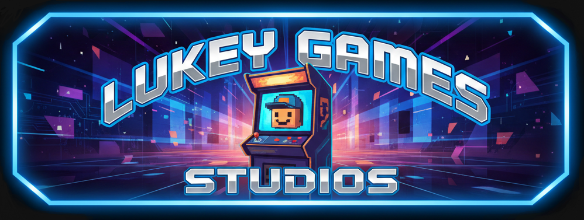

Welcome to Jewel Runner
About The Game
Jewel Runner is an exciting new platform game from Lukey Games Studios where you collect jewels and avoid obstacles. Your goal is to navigate through various levels, jumping from platform to platform, collecting as many jewels as possible while avoiding enemies and other hazards.
Trailer
Download the Game
You can download Jewel Runner for free from the following link:
Download Jewel RunnerAbout Lukey Games Studios
Lukey Games Studios is an independent game development studio focused on creating fun and engaging games. Founded by Luke Sheerin, we are dedicated to delivering high-quality gaming experiences.
